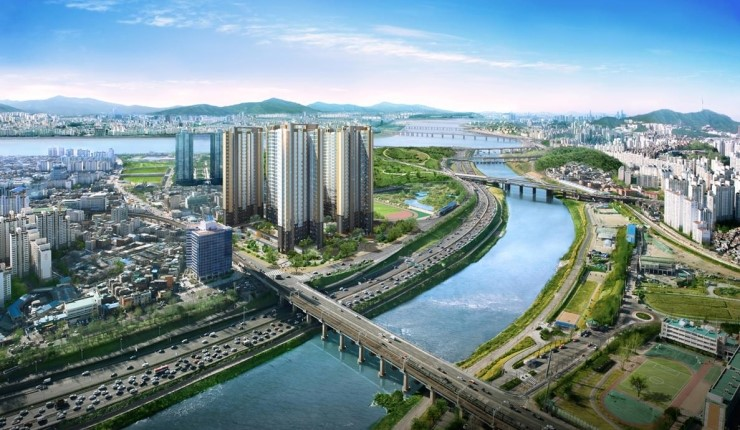
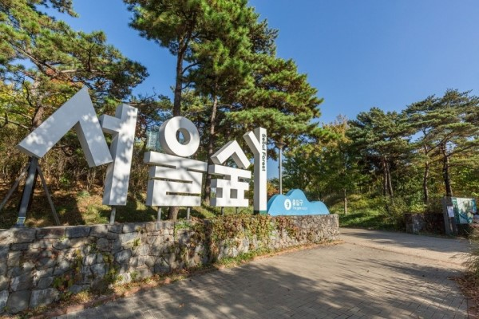
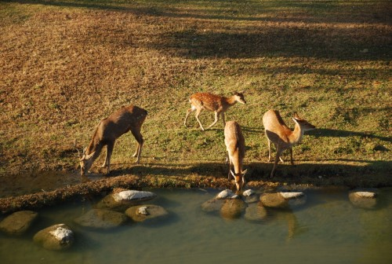
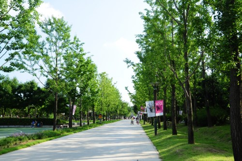
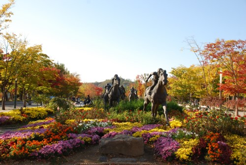

Seongsu-dong is a semi-industrial and residential area where the Han River and Jungnangcheon Stream are concentrated.
Seongsu is a clean and thankful water village with the name Seongsu, meaning the water of Han River.
Located between Jungnangcheon Stream and Hangang River, Seoul Forest, which was opened in 2005, is one of the most loved park by citizen.
The park consists of four parts, Culture & Art Park, Educational Experience Park, Eco-forest Park, and Riverside Park along Hangang River.
Seoul Forest Park is the first one which is established and managed by Citizen group as a public-private partnership.
From 2003 to 2005, more than 5,000 citizens and 70 firms had participated to plant trees for the park.
Since then it has been developing continuously with many volunteer activities and donations.
Seoul Forest Park has been managed by an NPO, named Seoul Forest Park Conservancy under the contract with Seoul Metropolitan Government.
  